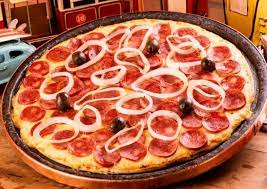
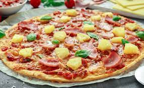
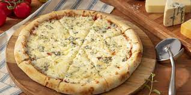
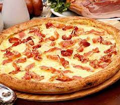

A variedade de coberturas que se pode colocar sobre uma pizza é quase infinita, entretat, algumas preparações
são tradicionais e têm fiéis seguidores:
 Margherita
Margherita Mussarela
Mussarela Portuguesa
Portuguesa-  Calabresa
-  Califórnia
- Pepperoni
-  Quatro Queijos
-  Bacon
 Fontes
Fontes
- http://pt.wikipedia.org/wiki/Pizza
- http://www.pizza.it
- http://en.wikipedia.org/wiki/History_of_pizza
w w w . p i z z a o n l i n e . c o m . b r